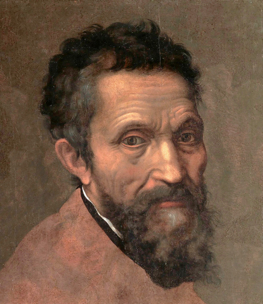

Michelangelo

Michelangelo as portrayed by Daniele da Volterra
Often considered the greatest artist of all time, Michelangelo was a sculptor and painter from the Florentine Republic, operating from around 1490 until his death in 1564.
His most famous works include David, a sculpture completed between 1501 and 1504 for the Florentine Republic, and the Sistine Chapel ceiling, painted between 1508 and 1512.
Timeline:
- 1475 - Michelangelo is born in the Florentine Republic.
- 1488 - Michelangelo is apprenticed to the master painter Domenico Ghirlandaio.
- 1499 - Pietà is completed, gaining widespread acclaim.
- 1504 - David is completed, securing Michelangelo's reputation as a master sculptor.
- 1508-1512 - Under the patronage of Pope Julius II, Michelangelo paints the Sistine Chapel Ceiling.
- 1520s-1530s - Michelangelo completed Night and Day, and Dusk and Dawn for the Medici Chapel in Florence.
- 1536-1541 - The Last Judgement is completed in the Sistine Chapel.
- 1542-1545 - The Conversion of Saul is painted in the Pauline Chapel.
- 1546-1550 - The Crucifixion of St. Peter is painted in the Pauline Chapel.
For more information, see Michelangelo's Wikipedia page or read Michelangelo: A Tormented Life by Antonio Forcellino.